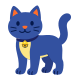
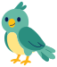
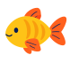

เก็บรายละเอียดเล็ก ๆ
รูปภาพ เรื่องราว เหตุการณ์สำคัญ และช่วงเวลาในชีวิตที่ทำให้สัตว์เลี้ยงของคุณพิเศษ
สำหรับวันที่อยากเก็บไว้ในความทรงจำ
เก็บเรื่องราวจากการเดินเล่น วันที่นอนงีบ ช่วงเวลาแรก ๆ และกิจวัตรที่คุ้นเคยไว้ในพื้นที่ส่วนตัวสำหรับสัตว์เลี้ยงที่คุณรัก
เริ่มใช้ฟรี ความทรงจำเป็นของคุณ
ไดอารี่สำหรับชีวิตที่มีสัตว์เลี้ยง
สร้างโปรไฟล์ให้สัตว์เลี้ยงแต่ละตัว แล้วเก็บรูปภาพ โน้ต เหตุการณ์สำคัญ และบันทึกประจำวันไว้ด้วยกัน เพิ่มรายละเอียดการดูแลที่เป็นประโยชน์ และกลับมาอ่านความทรงจำได้ทุกเมื่อ
สัตว์เลี้ยงทุกตัวมีเรื่องราว

แมว
นก
ปลารูปภาพ เรื่องราว เหตุการณ์สำคัญ และช่วงเวลาในชีวิตที่ทำให้สัตว์เลี้ยงของคุณพิเศษ
กิจวัตร การเตือน และบันทึกการดูแลอยู่ใกล้กับเรื่องราวที่เกี่ยวข้อง
ใช้ Ultra เพื่อเชิญคนในบ้านมาแบ่งปันความทรงจำและช่วยดูแลสัตว์เลี้ยง
เพิ่มพื้นที่ได้เมื่อต้องการ
PawFolio เริ่มต้นใช้ฟรี พร้อมพื้นที่ฟรีที่ใช้งานได้จริงในทุกวัน ส่วน Ultra มีพื้นที่เพิ่มและฟีเจอร์เพิ่มเติมบางอย่างเมื่อต้องการ
PawFolio
ใช้แอปเก็บช่วงเวลาสำคัญได้ต่อเนื่อง ไม่ต้องสมัครสมาชิกเพื่อเขียนไดอารี่หรือซิงค์ iCloud
PawFolio Ultra
เลือกสมัครสมาชิกรายเดือนหรือรายปี เพื่อเพิ่มพื้นที่และฟีเจอร์พิเศษบางอย่าง
สักวันคุณจะดีใจที่บันทึกวันนี้ไว้